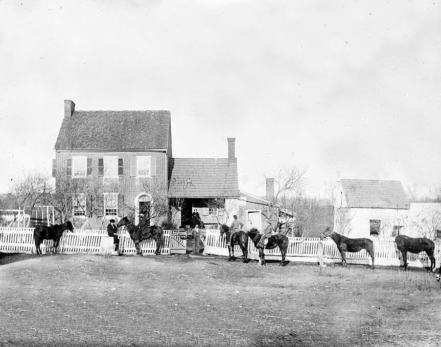
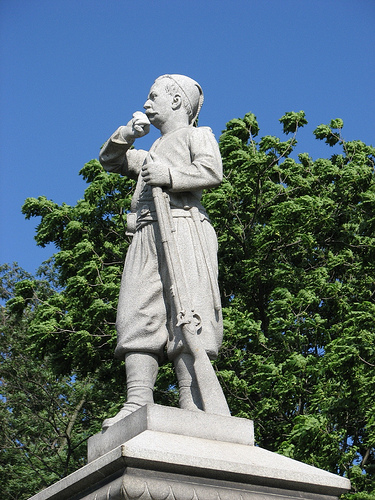

|
The town of Gettysburg supported a bustling economy that met
both the agricultural and mercantile needs of the
surrounding communities. One of the most significant
reasons for its being the commercial center of Adams County
was its convenient location as the heart of several roads
that led to many of the major cities throughout Pennsylvania
and Maryland. The most prominent industries in Gettysburg
at this time were a complex carriage manufacturing industry
and tanneries, which were responsible for the preparation of
leather for manufactured goods such as shoes, canteens, etc.
Whereas the majority of the citizens of Gettysburg engaged
in some sort of artisan or craft positions, there were
nearly a quarter of the citizens who were professionals,
retailers, and merchants. In additions to the numerous
industries supported by Gettysburg, this small and
relatively unknown town prior to the Civil War embraced all
the necessary commodities that proved to complete the town.
Gettysburg supported numerous taverns and hotels, a
telegraph office, the Hanover and Gettysburg railroad depot,
a college, a prison, and also a Lutheran Theological
Seminary. In addition, many small merchants whose
|

One of the largest residences in Gettysburg in 1863
|
specialties included general merchandise, butchers, grocers,
and cobblers marked the streets throughout the town square.
Despite the calm and sleepy atmosphere put forth by the
tree-lined avenues of Gettysburg: it can be concluded that
this town was a busy and economically prosperous place.
Population Data
According to the 1860 census, Gettysburg was the prosperous
seat of Adams County. It's 2391 townspeople composed
approximately 8% of the total population of Adams County.
Regardless of Gettysburg's close proximity to Maryland and
the Confederacy, it embraced a noticeably Northern
character. The citizens' heritage in Gettysburg included the
Dutch, the Scots-Irish, and the German. In addition,
according to the 1860 census, approximately 8% of citizens
were black or mulatto. At the time of the Civil war, four
out of five of the town's residents had been born in
Pennsylvania with an additional 44 citizens who had been
born in surrounding Northern states. A total of 207
townspeople were born in Southern states of which 185 came
from the state of Maryland only a few miles away. Of the
2400 residents, 190 were African Americans, many who had
settled in this town via the Underground Railroad. As the
war came to a close and the decade continued, Gettysburg
recovered from the battle and experienced a population
growth compatible to that of the rest of the nation.
Politics
On the eve of the Civil War, Gettysburg, just like the
majority of the North, was a town divided between the
Republicans and the Democrats. The political divisions of
Gettysburg were best represented by the towns weekly
newspapers: the pro-Republican Sentinel and the
pre-democratic Compiler. The debates that arose during the
election of 1860 exhibited both the political divisions as
well as the general distrust of abolitionism among the
citizens of the town. It was not until the first shot was
fired at Fort Sumter that the townspeople of Gettysburg
united as one to defend the Union against the South.
However, the political divisions between the Republicans and
the Democrats remained present throughout the war. According
to Sallie Myers, a 21-year old schoolteacher and resident of
Gettysburg, "[t]he sentiment in Gettysburg was strongly
Union, but at the same time we had in the community a good
many Democrats, or 'copperheads' as we called them, who
naturally affiliated with the South. They were not very open
in upholding the Southern cause, but just seemed to think
the South was right, and we often squabbled on that
subject."
Social Structure
Prior to the memorable summer of 1863, the women of
Gettysburg participated in a variety of war-related
activities such as preparing military supplies, tending to
the sick and wounded, and attending public ceremonies, to
raise the spirits of the local and national regiments alike.
In Gettysburg, the women formed the Ladies' Relief Society
in response to the high demands for local volunteers. The
women welcomed visiting regiments with open arms and treated
the soldiers as if they were their own. One regiment in
particular left a considerable impression on the citizens,
especially the women and children, of Gettysburg: the 10th
New York, otherwise known as the Porter Guards. The Porter
Guards were stationed just outside of Gettysburg during
1862. The women and children of Gettysburg often visited
them at camp to sing to them and to keep their spirits high.
Many of the Porter Guards established close relationships
with the citizens. Once the Porter Guards left Gettysburg,
many of the citizens followed their progress during the war
as closely as the regiments that had been drawn from
Gettysburg itself. As the invading armies drew close upon
Gettysburg, the townswomen were called upon to swallow their
fears and face the extremities of war. The women and
children would frequently stand on their porches and sing to
the soldiers as they passed by. In addition, they would go
to extremes to provide bread and water to the war torn
soldiers. Jennie Wade, the only civilian to be killed
during the three-day battle, died while making bread as a
stray bullet was fired into their house. Lastly, numerous
women were called upon to nurture the wounded soldiers in
the numerous churches and buildings that had been
transformed into hospitals. Sallie Myers, despite her fear
of blood, spent the entire battle assisting the wounded both
at the local church as well as in her home. The women's
work was not complete once the battle was over. They
continued to aid the wounded and dying soldiers, both Union
and Confederate, for weeks, even months, after the battle.
The scars that remained '
African-American Community
As the war drew closer to the small town of Gettysburg, a
number of its citizens, notably white men and African
Americans (both men and women) escaped to Northern towns in
order to prevent being captured by the incoming Rebel
forces. According to Salome Myers, a civilian girl in
Gettysburg, "[t]he town is pretty clear of darkies--darkies
of both sexes are skedaddling and some white folks of the
male sex." Those who dared to remain in the midst of battle
risked their life in the event that they were discovered by
the unforgiving Confederates. Following the battle, the
African Americans who chose to return to Gettysburg, most
likely had lost their lands due to the extreme destruction
that occurred during the battle. Prior to the incumbent
threats, African-Americans composed 190 of the 2400 citizens
of Gettysburg. These relatively high numbers are the result
of the town being a stop for the "Underground Railroad."
Even though the African Americans in Gettysburg were "free
blacks," just like the majority of the other free blacks in
the Northern states, they failed to enjoy social equality
with the white citizens. The majority of the African
Americans were concentrated in the Southwest region of the
town. Even though their population amounted to 8% of the
population, they only inhabited roughly 1% of Gettysburg's
total land area. The large majority of employed African
Americans worked as laborers or servants with only 15%
employed as artisans and even fewer who enjoyed professional
occupations. The economic divisions among Gettysburg whites
and African Americans were further reflected in the separate
churches, schools, and cemeteries that the African Americans
supported.
Mobilization for War
Immediately after the first shot at Fort Sumter, Lincoln
called on the Union men to defend their country. At the time
of Lincoln's initial call for service, the Compiler
declared, "Men of Adams County, your country calls." This
call proved to be more than enough motivation for the men of
Gettysburg to fall into ranks. These young men courageously
flocked to the lines and formed companies such as the Adams
Rifles, the Independent Blues and the Gettysburg Zouaves,
all of who were wearing uniforms as unique and colorful as
their names. Once these companies had been filled, the men
of Gettysburg enlisted with additional regiments in an
attempt to save their nation. As the first ninety days of
volunteer service came to an end, Lincoln once again issued
a call for additional volunteers. The patriotic spirits
continued to soar throughout Gettysburg, and once again,
this small town in Pennsylvania provided an ample number of
men to fight for it's nation. Regardless of the high
spirits, recruiters in Gettysburg gathered additional
|

A monument honoring Zouaves at Gettysburg
|
incentives for the young men. These incentives which
included bounties, comfortable winter quarters, and support
for their families at home, made it possible for Gettysburg
to fill the requested quotas. As a result, Gettysburg was
spared from the uncertainties of the draft at a time when
the Union was still a thousand men short of the quota.
Reaction to the Invasion of the
North
Due to the convenient location of the town 12 miles North of
the Mason-Dixon line, the citizens of Gettysburg had been
expecting Rebel raids since the beginning of the war. In
June of 1863, the news of the approaching confederate forces
filled the citizens of Gettysburg with anxieties and
apprehension, as well as excitement. According to Sarah
Broadhead, a 30-year old citizen of Gettysburg, "No alarm
was felt until Governor Curtin sent a telegram, directing
the people to move their stores as quickly as possible." In
response to the governor's telegram, bankers and merchants
shipped their goods north in order to protect them from the
invading army. As the Confederates marched throughout the
town, women and children alike stood on their porches to
personally witness the Rebel soldiers pass through the
streets. The men and the African Americans, on the other
hand, raced to escape in fear of being captured by the enemy
forces. As they fled, the men took their horses, livestock,
and other valuables in an attempt to save their family from
losing everything important to them. Despite the large
number of townspeople who fled the city prior to the
Confederates arrival, many remained to witness what was soon
to become the deadliest battle of the Civil War.
Source: Megan Quinn for the History 139A website
|